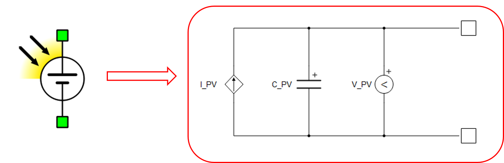
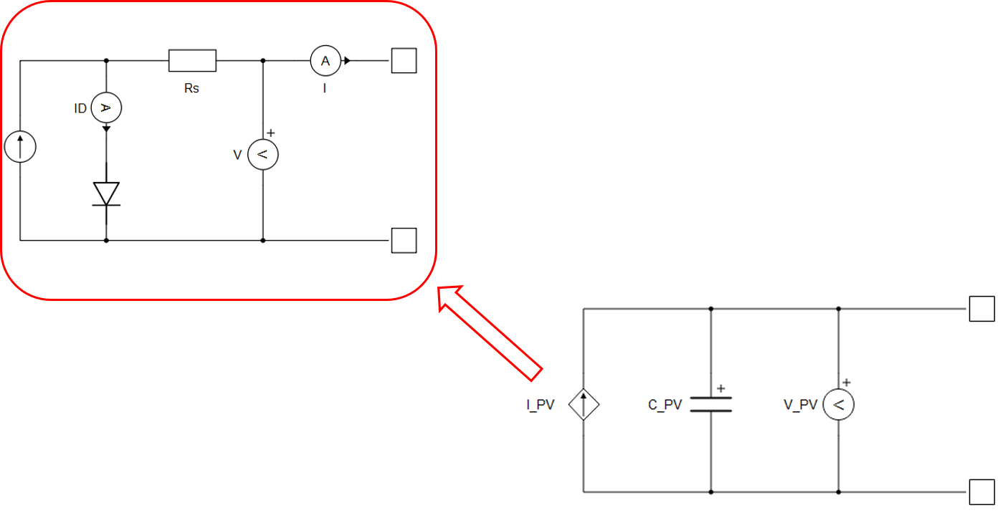
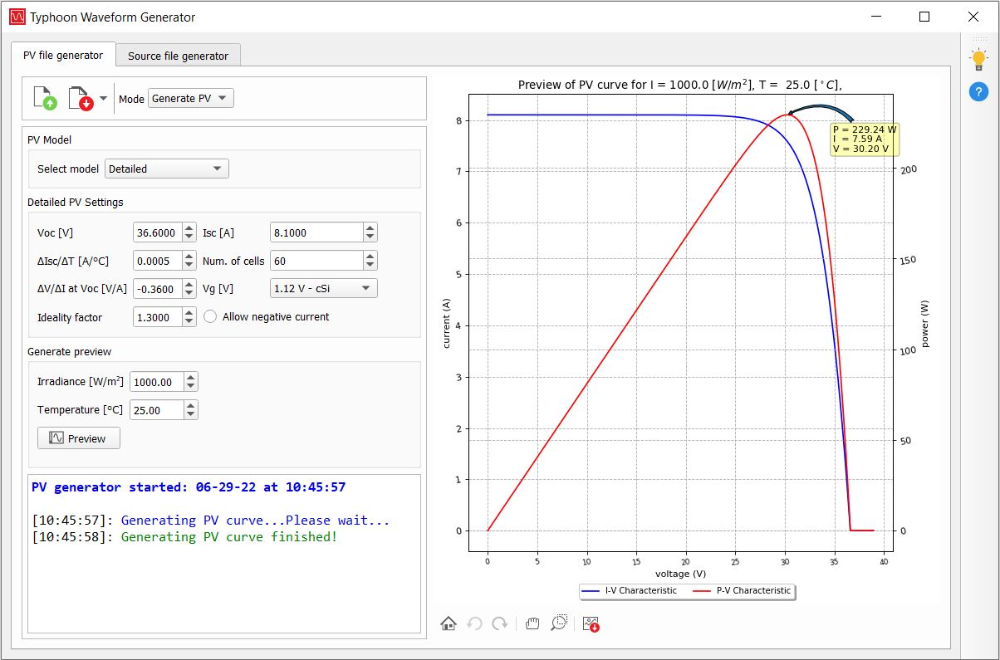
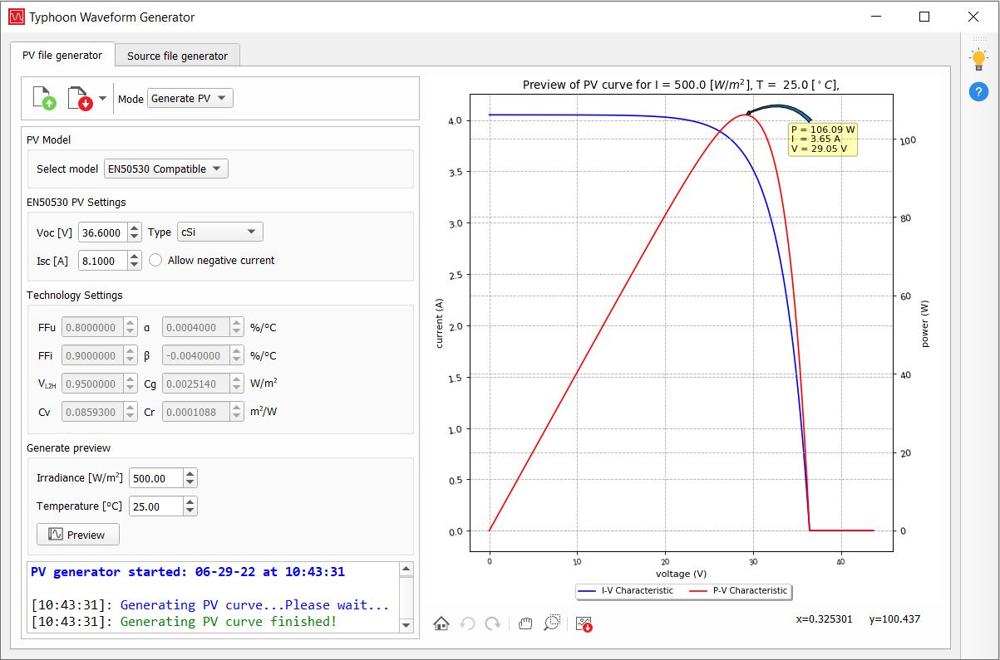
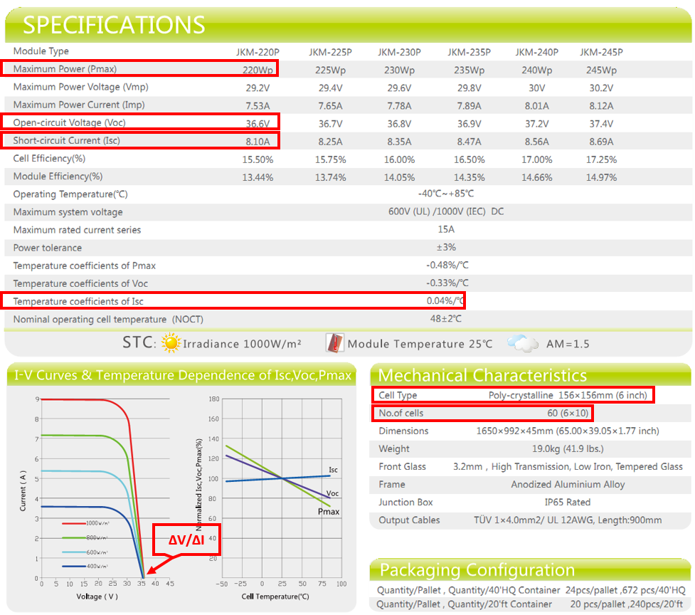
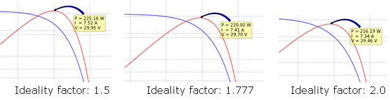

Photovoltaic Panel
Description of the Photovoltaic Panel component in Schematic Editor (t-tn002 - PV module-modeling and application)

Photovoltaic panel model
The photovoltaic panel element is modeled as a voltage-controlled current source I_PV with module capacitance C_PV connected in parallel, as shown in Figure 1. The current source I_PV is controlled by the voltage V_PV across the PV panel, in combination with a predefined PV model I-V curve.
The voltage-controlled current source I_PV represents a nonlinear resistor with the I-V characteristics equivalent to the standard PV cell characteristics, often modeled with the equivalent circuit given in Figure 2. The standard PV cell equivalent circuit model comprises an ideal semiconductor p-n junction, a current source that models irradiance flux, and series and shunt resistance that capture internal series and shunt losses.

The PV cell IV curve is given as:
where m is an ideality factor (usually in the range of 1 to 2, with m =1 being ideal), k is the Boltzmann constant, e is the electron charge, and Tc is the junction temperature. The PV module is modeled as a compound parameterized PV cell, comprising an array of individual PV cells connected in series and/or parallel. Hence, a full module, or even a series of modules, is represented with a single PV panel element in Schematic Editor.
Generating I-V curves in the Typhoon HIL Waveform Generator
- Detailed
- EN50530 Compatible
- Normalized IV
- Voc - open circuit voltage (*STC)
- Isc - short circuit current (*STC)
- ∆Isc/∆T - temperature coefficient of Isc (standard product parameter)
- Number of cells (standard product parameter)
- ∆V/VI at Voc - slope of the U/I characteristic at Voc operating point (product U/I curve)
- p-n junction voltage gap (1.12 for Xtal; 1.75 for amorphous Si)
- Ideality factor - a measure of how closely the diode follow the ideal diode equation (m in the range of 1 to 2)
The preview curve will be displayed for the entered irradiance and temperature.

- Voc - open circuit voltage (*STC)
- Isc - short circuit current (*STC)
- Type - type of the PV panel (cSi, thin film, or user defined)
- FFu - voltage fill factor, ratio of voltage at maximum power point (*STC) to open circuit voltage (*STC)
- FFi - current fill factor, ratio of current at maximum power point (*STC) to short circuit current (*STC)
- α - temperature coefficient of the current
- β - temperature coefficient of the voltage
- Cv, Cr, Cg - technology depending correction factors
The IV curve is a function of irradiance G, and temperature T. In particular, the parameters Isc(STC) and Voc(STC) are obtained under standard test conditions (G(STC)= 1000 W/m2, T(STC)= 25°C). The relationship between the current I and the terminal voltage V of a PV panel parametrized with FFu, FFi, α, β, Cv, Cr and Cg parameters, is given as:
where:
Isc is the short circuit current:
,
Voc is the open circuit voltage:
,
I0 is the reverse diode saturation current:
,
and Caq is a parameter dependent on voltage and current fill factors:
.

Example: JKM220P-60
This section gives an example of reading the parameters needed for the Waveform Generator tool from a PV module datasheet given in Figure 5.

The next steps describe how to determine the ideality factor for a given PV panel. It cannot be read directly from the datasheet, rather it has to be determined experimentally. After entering all the available parameters from the datasheet to the Waveform Generator, an initial value for the ideality factor should be chosen. A good initial guess for crystalline silicon is around 2, while for amorphous silicon is less than 2. Finally, the maximum power displayed on the graph in the Waveform Generator should be compared to the maximum power provided in the datasheet. This process should be repeated until a close enough match between the maximum powers from the PV curve preview and the datasheet is obtained. PV curves for several ideality factors are shown in Figure 6.

Measurements and inputs internal to the PV component
Available internal measurements are:
- C1
- Voltage across the PV panel [V]
The optional maximum power point (MPP) measurements, illumination, temperature, short circuit current, and open circuit voltage measurements of the signal processing based PV model are available through probes inside the component. Available outputs are:
- Imp
- Current at the maximum power point [A]
- Vmp
- Current at the maximum power point [A]
- MPP
- Power at the maximum power point [W]
- illuminationActual
- Illumination of the PV Panel, which equals the calculated value in case the illumination reference is delayed using ramping and/or scheduling [W/m2]
- temperatureActual
- Temperature of the PV Panel, which equals the calculated value in case the temperature reference is delayed using ramping and/or scheduling [°C]
- iscActual
- Short circuit current of the PV Panel, which equals the calculated value in case the short circuit current reference is delayed using ramping and/or scheduling [A]
- vocActual
- Open circuit voltage of the PV Panel, which equals the calculated value in case the open circuit voltage reference is delayed using ramping and/or scheduling [V]
If SCADA is selected as the Control option, the references for the signal processing based PV model are provided through SCADA inputs located inside the component. An overview of the available SCADA inputs related only to the EN50530 compatible PV model type is given below.
- illumination
- An analog input that sets the illumination reference [W/m2]
- temperature
- An analog input that sets the temperature reference [°C]
- FFu
- An analog input that sets the FFu maximum power point to the open circuit voltage (technology dependent) ratio
- FFi
- An analog input that sets the FFi maximum power point to the short circuit current (technology dependent) ratio
- Cg
- An analog input that sets the Cg (technology dependent) correction factor [W/m2]
- Cv
- An analog input that sets the Cv (technology dependent) correction factor
- Cr
- An analog input that sets the Cr (technology dependent) correction factor [m2/W]
- Vl2h
- An analog input that sets the Vl2h voltage low to high (technology dependent) ratio
- alpha
- An analog input that sets the α (technology dependent) current temperature coefficient [%/°C]
- beta
- An analog input that sets the β (technology dependent) voltage temperature coefficient [%/°C]
- negCurrent
- A digital input that enables negative current if the input value is high.
- illuminationInitial
- An analog input that sets the value of the illumination, which is used as an initial value in case of illumination ramping and/or scheduling at the start of the simulation [W/m2]
- temperatureInitial
- An analog input that sets the value of the temperature, which is used as an initial value in case of temperature ramping and/or scheduling at the start of the simulation [°C]
Available SCADA inputs related only to the Normalized IV PV model type are:
- normalizedDataI.value
- An analog input that sets the y- data set of the normalized IV curve by specifying the value of its tunable property value. The dimension of the value property is set to 500
- normalizedDataV.value
- An analog input that sets the x- data set of the normalized IV curve by specifying the value of its tunable property value. The dimension of the value property is set to 500
- normalizedDataEnable
- A digital input which applies values of normalizedDataI.value and normalizedDataV.value to generate the normalized IV curve if the value of the input is high. If these values are not meant to be applied, for example in case a new pair of x- and y- data sets is set in different simulation time steps, then its value can be set to low
Available common SCADA inputs are listed below. For the EN50530 compatible PV model type, ramping and/or scheduling can be applied to the temperature, illumination, short circuit current, and open circuit voltage references. For the Normalized IV PV model type, ramping and/or scheduling can be applied to short circuit current and open circuit voltage references.
- iscSTC
- An analog input that sets the short circuit current at standard operating conditions, if the IV curve is defined using an EN50530 compatible PV model. If the IV curve is defined using a Normalized IV PV model, then the analog input scales the y- data set normalizedDataI.value of the IV curve [A]
- vocSTC
- An analog input that sets the open circuit voltage at standard operating conditions, if the IV curve is defined using an EN50530 compatible PV model. If the IV curve is defined using a Normalized IV PV model, then the analog input scales the x- data set normalizedDataV.value of the IV curve [V]
- iscInitial
- An analog input that sets the value of the short circuit current, which is used as an initial value in case of short circuit current ramping and/or scheduling at the start of the simulation [A]
- vocInitial
- An analog input that sets the value of the open circuit voltage, which is used as an initial value in case of open circuit voltage ramping and/or scheduling at the start of the simulation [V]
- pvModelType
- An analog input that selects the type of PV model type based on which the IV curve is generated. If its value is 1, the EN50530 compatible PV model is applied. If its value is 2, the Normalized IV PV model is applied. The input is available if both Enable SP-based implementation and Normalized IV options are enabled.
- rampTime
- An analog input that sets the duration of the ramping period [s]
- executeAt
- An analog input that sets the value of the simulation time at which the specified references are applied. Scheduling of multiple simulation times before the first scheduled time has been reached is not supported [s]
- rampType
- A digital input that determines the shape of the transition of the specified references. If the input value is low, linear transition is applied. If the input value is high, exponential transition is applied
- dynamicsEnable
- An analog input that disables ramping and/or scheduling if its value is 0, and enables them if its value is 1. Higher values of the analog input are reserved, and are used when ramping and/or scheduling is set using HIL API functions
Ports
- p_node (electrical)
- Positive node
- n_node (electrical)
- Negative node
- port_model_type (in)
- Input is available if Enable SP-based implementation is checked, EN50530 Compatible PV model type is enabled, Normalized IV PV model type is enabled, and Control option is set to Model.
- Integer value of the input signal selects the PV model type for IV curve definition:
- 1: EN50530 Compatible PV model type
- 2: Normalized IV PV model type
- If the input value is out of scope, then it will be treated as 1, and the EN50530 Compatible PV model type will be selected.
- Vector support: no
- port_en50530 (in)
- Input vector is available if model inputs for EN50530 Compatible PV model type are enabled.
- The input vector definition is determined by the chosen implementation type and model input settings and displayed in the component description.
- Vector support: yes
- port_normalized (in)
- Input vector is available if model inputs for Normalized IV PV model type are enabled.
- The input vector definition is determined by the chosen implementation type and model input settings and displayed in the component description.
- Vector support: yes
Implementation type (Tab)
In real-time/VHIL simulation, the Photovoltaic Panel component is simulated either on a dedicated hardware based look-up table unit in the FPGA of HIL simulators, or using signal processing components computed in general purpose processors. In real-time/VHIL simulation, if the option Enable SP-based implementation is unchecked, then the predefined IV curve is simulated at the basic simulation timestep of the electrical circuit, as defined in the circuit solver settings. In TyphoonSim simulation, if the Enable SP-based implementation is unchecked, then the component is simulated as a look-up table controlled current source, whose IV curve can be specified in the Parameters tab. If the option Enable SP-based implementation is checked, the PV panel is modeled using a signal processing based PV model. In this case, the IV curve is simulated at the execution rate of the signal processing components, defined by the Execution rate property. The component can be controlled through dedicated HIL API functions, or through signal inputs from the model.
- Enable SP-based implementation
- Enables simulation of the IV curve using signal processing components
- En50530 Compatible
- Available if Enable SP-based implementation is checked
- Enables IV curve definition using the EN50530 compatible PV model type
- Normalized IV
- Available if Enable SP-based implementation is checked
- Enables IV curve definition using the Normalized IV PV model type
- Control
- Available if Enable SP-based implementation is checked
- Selects control option for the IV curve definition between SCADA inputs and signal inputs from model
- In TyphoonSim simulation, if the SCADA control option is selected, then the internal SCADA inputs will output constant values which are defined using a generated PV parameters file.
Parameters (Tab) - Initial settings
- The Initial settings section is available if Enable SP-based implementation is unchecked,
or if Enable SP-based implementation is checked and Control
option is set to SCADA. The following properties can be used:
- PV parameters file
- Specifies path to generated IV curve parameters file
- Illumination
- Initial value of illumination [W/m2]
- Applies to Detailed and EN50530 Compatible PV model type
- Temperature
- Initial value of temperature [°C]
- Applies to Detailed and EN50530 Compatible PV model type
- Isc
- Initial value of short-circuit current [A]
- Applies to Normalized IV PV model type
- Voc
- Initial value of open-circuit voltage [V]
- Applies to Normalized IV PV model type
- Preview
- Shows IV curve based on the specified PV parameters and ambiental settings
- PV parameters file
Parameters (Tab) - EN50530 Compatible model input settings
- The EN50530 Compatible model input settings section is available if Enable SP-based implementation is checked, EN50530 Compatible PV model type is enabled, and Control option is set to Model. The values of EN50530 Compatible PV model type parameters can be specified with the EN50530 Compatible parameters file, or through enabled signal inputs from the model. The enabled signal inputs can be connected to the input vector port_en50530.
- The following properties are available:
- EN50530 Compatible parameters file
- Specifies path to generated IV curve parameters file for EN50530 Compatible PV model type. Parameters from this file define the constant values of parameters which are not selected as model inputs.
- Illumination control
- Selects control option for illumination between a constant value, signal input from model, and profile values with respect to simulation time.
- Illumination
- Available if Illumination control is set to Constant.
- Specifies a constant illumination reference [W/m2].
- Illumination profile
- Available if Illumination control is set to Profile.
- Specified values of illumination [W/m2] with respect to simulation time set in Illumination time points.
- Illumination time points
- Available if Illumination control is set to Profile.
- Specified values of simulation time [s].
- Illumination ramp type
- Available if Illumination control is set to Profile.
- Specifies the interpolation method for illumination values with respect to simulation time. Selects between Linear and Exponential ramp types.
- Preview llumination
- Available if Illumination control is set to Profile.
- Shows illumination values with respect to simulation time for the specified ramp type.
- Temperature control
- Selects control option for temperature between a constant value, signal input from model, and profile values with respect to simulation time.
- Temperature
- Available if Temperature control is set to Constant.
- Specifies a constant temperature reference [°C].
- Temperature profile
- Available if Temperature control is set to Profile.
- Specified values of temperature [°C] with respect to simulation time set in Temperature time points.
- Temperature time points
- Available if Temperature control is set to Profile.
- Specified values of simulation time [s].
- Temperature ramp type
- Available if Temperature control is set to Profile.
- Specifies the interpolation method for temperature values with respect to simulation time. Selects between Linear and Exponential ramp types.
- Preview temperature
- Available if Temperature control is set to Profile.
- Shows temperature values with respect to simulation time for the specified ramp type.
- iscSTC
- Enables signal input from model that sets the value of short circuit current at standard operating conditions.
- vocSTC
- Enables signal input from model that sets the value of open circuit voltage at standard operating conditions.
- FFu
- Enables signal input from model that sets the value of the voltage fill factor FFu.
- FFi
- Enables signal input from model that sets the value of the current fill factor FFi.
- Cg
- Enables signal input from model that sets the value of the technology dependent correction factor Cg.
- Cv
- Enables signal input from model that sets the value of the technology dependent correction factor Cv.
- Cr
- Enables signal input from model that sets the value of the technology dependent correction factor Cr.
- Vl2h
- Enables signal input from model that sets the value of the voltage low to high ratio Vl2h.
- Alpha
- Enables signal input from model that sets the value of the current temperature coefficient alpha.
- Beta
- Enables signal input from model that sets the value of the voltage temperature coefficient beta.
- Negative current
- Enables signal input from model that specifies if negative current is allowed.
- Preview EN50530 Compatible
- Shows IV curve based on the file specified with EN50530 Compatible parameters file and ambiental settings
- EN50530 Compatible parameters file
Parameters (Tab) - Normalized IV model input settings
- The Normalized IV model input settings section is available if Enable SP-based implementation is checked, Normalized IV PV model type is enabled, and Control option is set to Model. The values of Normalized IV PV model type parameters can be specified with the Normalized IV parameters file, or through enabled signal inputs from the model. The enabled signal inputs can be connected to the input vector port_normalized.
- The following properties are available:
- Normalized IV parameters file
- Specifies path to generated IV curve parameters file for Normalized IV PV model type. Parameters from this file define the constant values of parameters which are not selected as model inputs.
- Isc control
- Selects control option for short circuit current (Isc) between a constant value, signal input from model, and profile values with respect to simulation time.
- Isc
- Available if Isc control is set to Constant.
- Specifies a constant short circuit current (Isc) reference [A].
- Isc profile
- Available if Isc control is set to Profile.
- Specified values of short circuit current (Isc) [A] with respect to simulation time set in Isc time points.
- Isc time points
- Available if Isc control is set to Profile.
- Specified values of simulation time [s].
- Isc ramp type
- Available if Isc control is set to Profile.
- Specifies the interpolation method for short circuit current (Isc) values with respect to simulation time. Selects between Linear and Exponential ramp types.
- Preview isc
- Available if Isc control is set to Profile.
- Shows short circuit current (Isc) values with respect to simulation time for the specified ramp type.
- Voc control
- Selects control option for open circuit voltage (Voc) between a constant value, signal input from model, and profile values with respect to simulation time.
- Voc
- Available if Voc control is set to Constant.
- Specifies a constant open circuit voltage (Voc) reference [V].
- Voc profile
- Available if Voc control is set to Profile.
- Specified values of open circuit voltage (Voc) [V] with respect to simulation time set in Isc time points.
- Voc time points
- Available if Voc control is set to Profile.
- Specified values of simulation time [s].
- Voc ramp type
- Available if Voc control is set to Profile.
- Specifies the interpolation method for open circuit voltage (Voc) values with respect to simulation time. Selects between Linear and Exponential ramp types.
- Preview voc
- Available if Voc control is set to Profile.
- Shows open circuit voltage (Voc) values with respect to simulation time for the specified ramp type.
- Normalized data size
- Available if Voc control is set to Profile.
- Specifies the dimension of normalized data V and normalized data I signal inputs from model.
- Normalized data V
- Enables signal input from model that sets the value of the normalized voltage data. The dimension of normalized voltage data input is specified with Normalized data size.
- Normalized data I
- Enables signal input from model that sets the value of the normalized current data. The dimension of normalized current data input is specified with Normalized data size.
- Preview Normalized IV
- Shows IV curve based on the file specified with Normalized IV parameters file and short ciruit current and open circuit voltage settings.
- Normalized IV parameters file
Measurements (Tab)
- MPP measurement
- Available if Enable SP-based implementation is checked
- Enables/disables monitoring of maximum power point (MPP)
Signal processing (Tab)
- Execution rate
- Available if Enable SP-based implementation is checked
- Type in the desired signal processing execution rate. This value must be compatible with other signal processing components of the same circuit: the value must be a multiple of the fastest execution rate in the circuit. There can be up to four different execution rates. To specify the execution rate, you can use either decimal (e.g. 0.001) or exponential values (e.g. 1e-3) in seconds. Alternatively, you can type in ‘inherit’ in which case the component will be assigned execution rate based on the execution rate of the components it is receiving input from.
- Slow execution rate
- Available if Enable SP-based implementation and Normalized IV are checked
- Signal processing execution rate at which the Normalized IV curve data points are updated. The slow execution rate applies to the inputs which specify x- and y- data sets, normalizedDataV.value and normalizedDataI.value, respectively. This execution rate, however, does not apply to short circuit current iscSTC and open circuit voltage vocSTC inputs which scale the specified data sets. Instead, these inputs are updated at the faster execution rate, Execution rate.
- CPU core
- Available if the Enable SP-based implementation option is marked, and if the specified HIL device contains multiple User CPU cores to choose from.
- Specifies which User CPU core executes the signal processing portion of the component.
- If the model is compiled for a HIL device which contains only one User CPU core (CPU core 0), then the value of this property is not applied, and the internal signal processing portion is mapped to CPU core 0.
Diode capacitance (Tab)
- Cpv
- PV diode capacitance [F]
- Initial voltage
- Initial voltage of the component [V]
Extras (Tab)
- Public - Components marked as public expose their signals on all levels.
- Protected - Components marked as protected will hide their signals to components outside of their first locked parent component.
- Inherit - Components marked as inherit will take the nearest parent 'signal_access' property value that is set to a value other than inherit.
References
[1] Overall efficiency of grid connected photovoltaic inverters, CENELEC, St. EN 50530, 2010